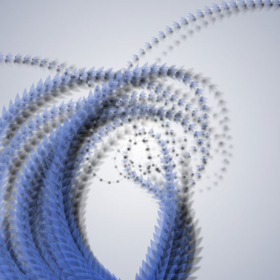

Growing things | kudzu

############################################################################ # Copyright (c) 2007 Tom De Smedt. __author__ = "Tom De Smedt" __version__ = "1.9.1" __copyright__ = "Copyright (c) 2007 Tom De Smedt" __license__ = "GPL" ############################################################################# colors = ximport("colors") supershape = ximport("supershape") cornu = ximport("cornu") # The geo library bundles the commands discussed in: # http://nodebox.net/code/index.php/Math from nodebox import geo ############################################################################# def petal(clr, x=0, y=0, width=30, angle=90): """ A supershape teardrop rotated under given angle a. Its rotation point is at the bottom center of the shape. """ push() translate(x-width/2, y) rotate(angle) translate(width*0.5, 0) thickness = random(0.2, 0.3) path = supershape.path(0, 0, width, width, 2, thickness, -0, 1) # Use the colors library to fill it with a gradient of clr. clr1 = clr.lighten(random(0.4)) clr2 = clr1.darken(0.8) colors.gradientfill( path, clr2, clr1, type="linear", angle=90 ) pop() def flower(clr, x=0, y=0, width=30, angle=90): """ Collection of four petals. """ for i in range(4): petal(clr, x, y, width, angle-45+i*30) ############################################################################# def offscreen(x, y, m=300): """ Returns True if (x, y) falls outside the visible canvas. """ if x < -m or x > WIDTH+m or y < -m or y > HEIGHT+m: return True else: return False def vine(clr): """ Draws flowers along an elegant Cornu curve. """ nofill() stroke(1, 1, 1, 0.5) strokewidth(0.4) autoclosepath(False) # A smooth Cornu path starting bottom center, # and ending up somewhere in the center of the canvas. path = cornu.path([ (0.5, 1.1), (random(0.3, 0.7), random(0.3, 0.7)), (random(0.3, 0.7), random(0.3, 0.7)), (random(0.4, 0.6), random(0.4, 0.6)) ]) # If you have an older version of the Cornu library, # you'll need the following two lines to convert # the flat path to Bézier-Curves: #path = [(pt.x, pt.y) for pt in path.points(20)] #path = findpath(path) drawpath(path) strokewidth(strokewidth()*0.5) # Calculate a number of points on the path depending on its length. n = path.length / 25 for i in range(int(n)): t = 1 - float(i) / n pt = path.point(t) # Cornu curves can become very big so we need to check # if a point is visible before drawing flowers on it. # Otherwise this script will take forever to render. if not offscreen(pt.x, pt.y): # At each point we place a flower. # The further down the path, # the more desaturated and transparent flowers get. c = clr.desaturate(t * 0.5) c.alpha += (1-t)*0.1 # The further down the path, the smaller flowers get. w = (1-t) * 80 # Shadows gradually diverge from the stem, # adding to the sense of depth. colors.shadow(alpha=1.5*(1-t), dx=80-w) oval(pt.x-w/4, pt.y-w/4, w/2, w/2) # Draw a flower, rotating along the curve of the path. a = 360 - geo.angle(pt.x, pt.y, pt.ctrl2.x, pt.ctrl2.y) flower(c, pt.x, pt.y, w, a) def kudzu(clr, vines=10): """ Many vines make up a plant. """ for i in range(vines): vine(clr) ############################################################################# size(800, 800) clr = colors.color(0.3, 0.5, 1.0, 0.2) # Gradient background. colors.gradientfill( rect(0, 0, WIDTH, HEIGHT, draw=False), clr.darken(0.6).desaturate(0.0), color(1), spread=0.75) kudzu(clr, 10)